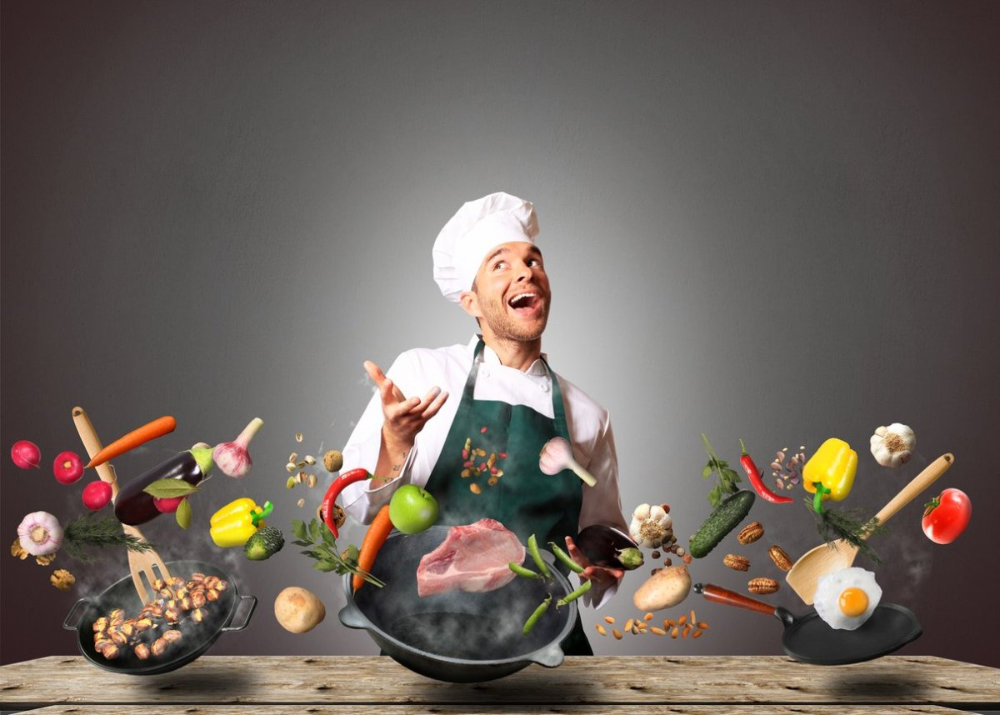
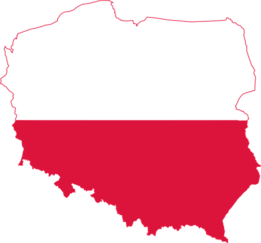

Кулінарна подорож по Rout mountain
Кожен турист, відвідавши наші ресторани чи точки з вуличною їжею, знайде для себе щось смачне і цікаве. Пропонуємо як страви ситні та калорійні з різноманітних видів м'яса та риби, так і велику кількість страв малокалорійних, вегетаріанських та веганських.
Наші гості мають нагоду спробувати не тільки страви української кухні, а і страви з інших куточків світу.
Також в наших ресторанах Ви можете навчитися готувати свої улюблені страви на наших майстер класах.
Чекаємо на Вас! Смачної Вам подорожі!
Тиждень Польші в наших закладах
Наші смачні локації
Ресторан
Наш ресторан з відкритою кухнею, бо вважаємо, що кращою ознакою гідної уваги закладу є його відкритість. У поданні страв, у ставлені до гостя і, звичайно ж, в самій кухні. Туди, де солодко пахне десертами, чується мелодія крапель вина в келиху і томиться на очах у гостя приготовлена страва, хочеться приходити ще і ще. Адже не дарма кажуть, що перша частина задоволення - споглядання. Також в нашому ресторані Ви матимете нагоду, не тільки споглядати за тим, як кухар готує для Вас, а й самому приготувати улюблену або нову страву на наших майстер-класах.
Детальніше...Фуд-трак
Популярність "ресторанів на колесах" давно набрала свої оберти у всьому світі, так і в Україні слідуючи за Європою активно розвивається. Ми не виключення.
Наш фуд-трак пропонує скуштувати як авторськи бургери, піци та модні азіатськи страви швидкого приготування, так і традиційні, українській кухні, вареники та деруни.
З задоволенням вивчаємо різні кухні світу, та пропонуємо своїм туристам спробувати нову, цікаву, смачну їжу!
Детальніше...Кав'ярня
Справжніх кавоманів, які готові об'їхати весь світ у пошуках ідеального кавового смаку, запрошуємо до нашої кав'ярні. Тут Ви не тільки вип'єте улюблений напій з канапкою, чи шматочком тістечка, а й побуваєте в чудовій атмосфері серіалу "Друзі".
Це затише гніздечко завжи радіє візитам наших любих гостей. Приємна атмосфера... І смакота куди не поглянь... Ідеальне місце для зустрічей справжніх друзів!
Отож, дивимось серіал "Друзі", п'ємо каву та насолоджуємося життям!
Детальніше...Магазин
gastro presentГірськолижний курорт "Rout Mountain" - це не лише гарне місце для активного відпочинку, а й райський куточок для душі. Адже в магазині курорту смаколики, які можна придбати, як для себе на згадку про нас, так і на подарунок для рідних чи друзів, мають високу якість, а також усі вони натуральні та приносять здоров'ю людини лише користь.
Туристи які в перше їдуть на наш курорт, запитують, що купити в "Rout Mountain"? Сири різних видів, карпатський чай із запашних трав, що ростуть у гірських долинах, варення, мед, сушені фрукти, домашнє вино, пряники, смачні цукерки з горіхами та ягодами, та шоколад.
Детальніше...Відгуки наших відвідувачів
Соломія Сидоренко
Ресторан "Едельвейс" - це чудове атмосферне місце:) Привітний персонал і надзвичайно смачні страви :)
Андрій Оленко
Недавно завітав у кав'ярню "Friends". Класна атмосферна, чудова та запашна кава, з гарним і на вид і на смак тістечком! Рекомендую!
Jadwiga Jankowska
Pierwszy raz na Ukrainie! Dobre wrażenia z kraju, kurortu! Wszystkie dania prezentowane podczas „Tygodnia Polski” są pyszne i przypominają te, które jadłam w domu w Polsce!